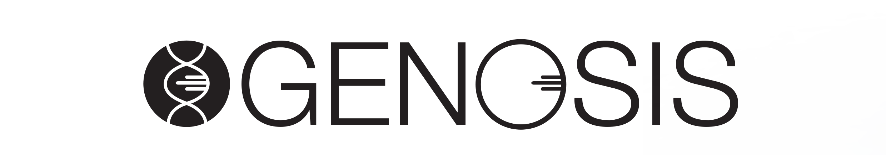
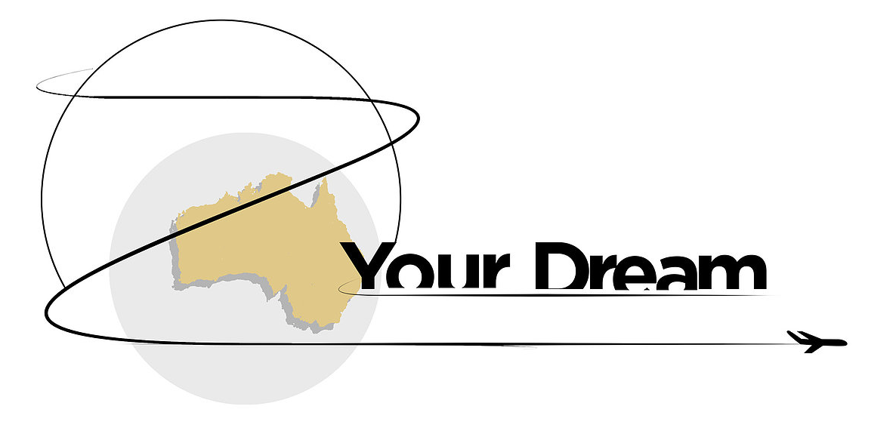

HELLO
my name is Jeremy Courcieres
and
I am an Industrial Designer.
I would like to thank you for taking your time to look at my work.
I am interested in designing industrial products I UX - UI as well as digital illustrations.
Email:
jeremycourcieres@gmail.com
Phone:
04 66 09 45 25


INTRODUCTION
To make a valuable and unique contribution to the design industry, focusing on exceeding goals and expectations.
I aim to use my education in industrial design, marketing and academic research to provide my future employer
with a distinct advantage, both creatively and professionally.
I pride myself on my aptitude for acquiring new design skills, and I feel that my greatest strength lies in
my ability to create visual representations of otherwise abstract ideas.
My resourcefulness and versatility allows me to adapt to a variety of platforms,
ensuring I complete every design task to the highest of both my employer and clients.

PROJECTS
| ————PROJECTS | ||||
|---|---|---|---|---|
| MADISON | TS-2 | XLM | LOGO DESIGN | EXTRAS |
HAND REMOTE
CONTROL
This is a fully functional, final product.
The unit was developed for road side construction based to ease traffic around a construction area.
It connects to 2 sets of traffic light and is able to handle multiple different scenarios of road traffic
based around construction site.
The HRC has been designed to reach IP and IK capabilities.
Designed and implemented all visual elements, information flow and the ability to be used by any user.
TILT SENSOR
TS-2
This is a fully functional, final product.
The unit was developed for excavator designed to provide accurate measurements. on X - Y - Z axis.
The tilt sensor is rugged and highly durable.
Designed improvement and implemented all visual elements, multiple capabilities of mounting options and brand new design look.
Additional flange was also designed to accompanied with this unit.
AUXILIUM
Auxilium product
Designed and implemented all visual elements, product re-branded. Injection moulded with structural product ribs.
Rugged design, triangular structure with 3 mounting points.
LOGO DESIGN
————XING LOGO

logo design for XING.
Created brand new graphics to symbolize what the brand was about.
Through the use of clear visual and simple font and modifications this logo was designed and picked by Xing.
————OTHER SUBMITTED XING LOGO
LE PETIT PARIS
BAKERY
https://www.mustdobrisbane.com/archives/le-petit-paris-fortitude-valley
Le Petit Paris bakery, creperie and café is an authentic slice of France tucked away down Bakery Lane in Fortitude Valley.
The tiny Euro-chic venue features elegant armchairs with furry cushions with a backdrop of the Eiffel Tower and rooftops of Paris inside and a smattering of patio tables and chairs outside.
OZ YOUR DREAM
French pond for dare your dream.
Aim at french traveller coming to Australia to find cheap fares for travel and accommodations.
Project never took off.
French pond for dare your dream.
Aim at french traveller coming to Australia to find cheap fares for travel and accommodations.
Project never took off.
EXTRAS
Artwork - 1
"Still wondering"
Artwork - 2
"Light stroll to the city"